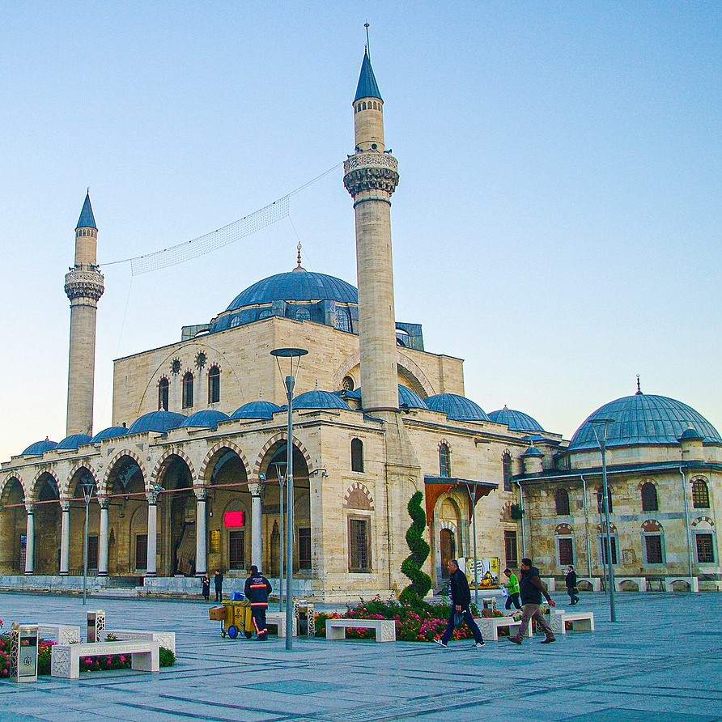
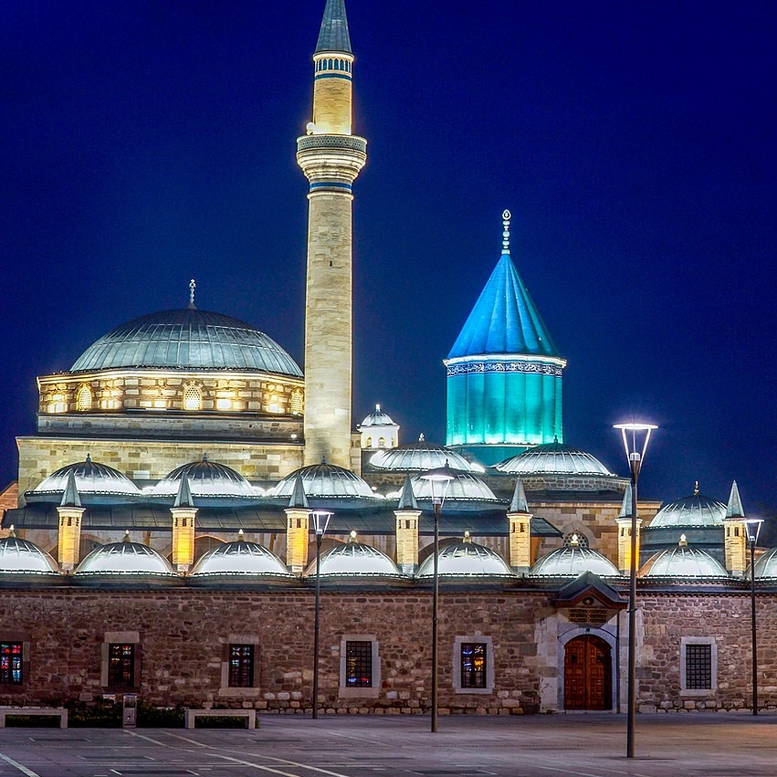
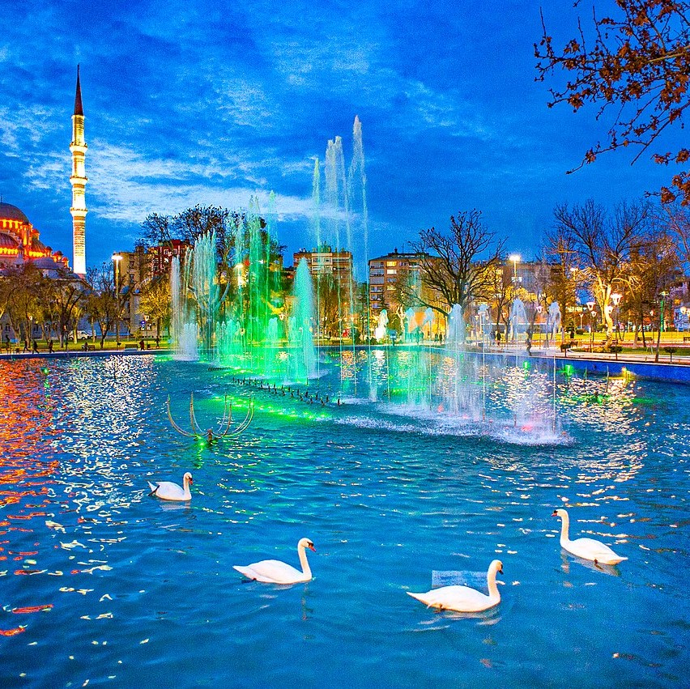
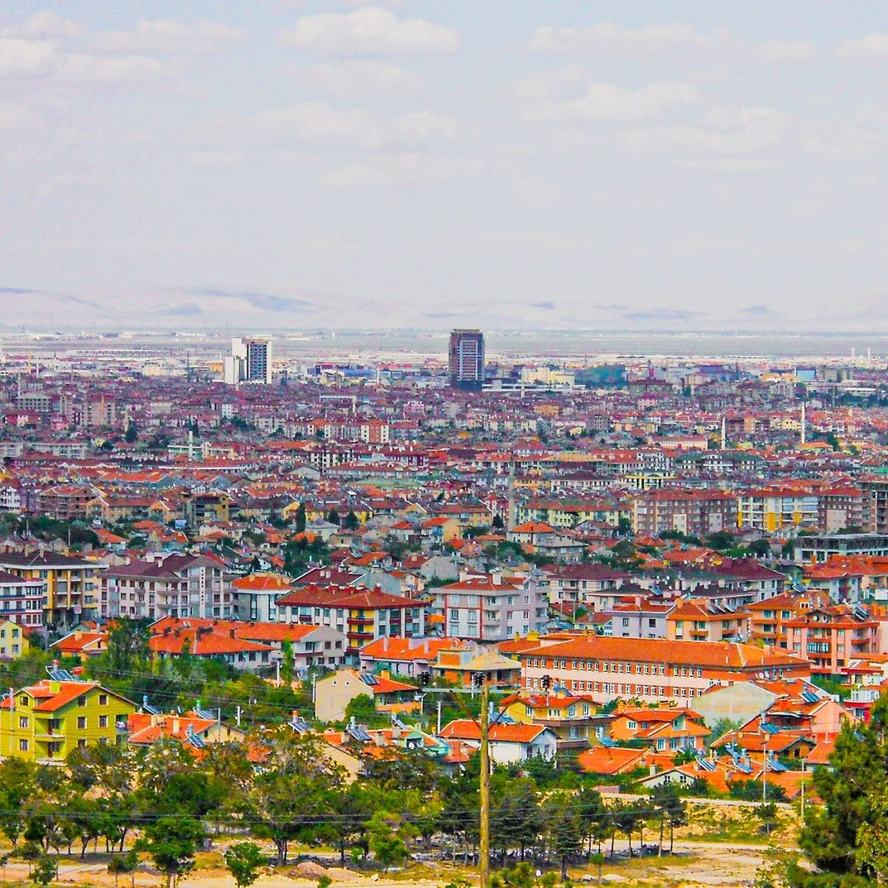

KONYA
Konya, Türkiye'nin yüzölçümü bakımından en büyük ili ve en kalabalık altıncı şehridir. 31 ilçeden oluşur. Konya il nüfusu 2021 yılında 2.277.017'ydi,[1] trafik plaka numarası 42'dir.[3] 1875'te kurulan Konya Belediyesi, 1987'de çıkarılan 3399 sayılı yasa gereğince "büyükşehir" statüsüne kavuşmuş olup 1989'dan beri belediye hizmetleri bu statüye göre yürütülmektedir. 2014'te 6360 sayılı kanun ile büyükşehir belediyesinin sınırları il mülki sınırları oldu.
Ekonomik açıdan Türkiye'nin gelişmiş kentlerinden biri olan Konya doğal ve tarihsel zenginlikleriyle de önem taşır. Dünyanın en eski yerleşimlerinden biri olan Çatalhöyük, 2012 yılında UNESCO Dünya Miras Listesi'ne alınmıştır. Şehir Anadolu Selçukluları’nın ve Karamanoğulları’nın başkentliğini yapmıştır. Türkiye'nin en önemli sanayi kentlerinden birisidir. Anadolu Kaplanları'ndandır. Şehrin futbol takımı Konyaspor'dur. Yöresel yemekleri etliekmek, bamya çorbası, Mevlana böreği, yağ somunu, tirit, Konya pilavı, sac arası ve fırın kebabı'dır. Konya’nın simgeleri Mevlana Müzesi (Kubbe-i Hadrâ), çift başlı kartal'dır.
Anasayfa | Hakkımda | Memleketim | Görüş | İletişim
© 2022 Tüm hakları saklıdır.| Tasarım: www.youtube.com/dogukankorkmazz